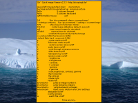

Quick Image Viewer
Dieser Artikel wurde für die folgenden Ubuntu-Versionen getestet:
Ubuntu 16.04 Xenial Xerus
Ubuntu 14.04 Trusty Tahr
Zum Verständnis dieses Artikels sind folgende Seiten hilfreich:
Der Quick Image Viewer  (kurz
(kurz qiv) erscheint auf den ersten Blick nur wie ein weiterer einfacher, aber schneller Bildbetrachter. Doch wer sich bei Sonderwünschen wie der scheinbar trivialen Aufgabe, eine Diaschau anhand einer Dateiliste abzuspielen, die Zähne an anderen Programmen ausgebissen hat, wird das Programm schnell zu schätzen wissen. Damit eignet es sich als Bildbetrachter für Spezialaufgaben.
Unterstützte Bildformate:
|  |
| Bildanzeige mit aktivierter Hilfe |
Alternativ kann man das ebenfalls in den offiziellen Paketquellen enthaltene pqiv  nutzen, einen Nachbau des Originals auf Basis der Grafikbibliothek GTK. Der Programmautor verspricht (fast) volle Kompatibilität plus einige zusätzliche Funktionen.
nutzen, einen Nachbau des Originals auf Basis der Grafikbibliothek GTK. Der Programmautor verspricht (fast) volle Kompatibilität plus einige zusätzliche Funktionen.
Installation¶
 Das Programm ist in den offiziellen Paketquellen enthalten und kann über folgendes Paket installiert [1] werden:
Das Programm ist in den offiziellen Paketquellen enthalten und kann über folgendes Paket installiert [1] werden:
qiv (universe)
 mit apturl
mit apturl
Paketliste zum Kopieren:
sudo apt-get install qiv
sudo aptitude install qiv
Bedienung¶
qiv besitzt keinen Menü-Eintrag. Stattdessen verwendet man das Programm in einem Terminal-Fenster [2]. Die generelle Syntax lautet:
qiv OPTIONEN DATEIEN
Ein erstes Beispiel:
qiv -s -w 800 ~/Bilder
startet eine Diaschau in einen auf dem Desktop zentrierten Fenster mit einer Breite von 800 Pixeln und spielt diese in einer Endlos-Schleife solange ab, bis man die Tasten
Q (quit) oder
Esc drückt. Angezeigt werden alle unterstützten Bilder aus dem Ordner ~/Bilder/.
Falls dagegen eine Vollbildanzeige gewünscht ist, benutzt man:
qiv -s -f -m ~/Bilder
Eine Übersicht der möglichen Tastenkürzel während der Anzeige erhält man mit F1 . Alternativ kann man auch den folgenden Befehl verwenden:
qiv --help
Eine weitere Hilfe ist die Manpage zum Programm: qiv
Dateiliste erstellen¶
Um die eingangs erwähnte Möglichkeit, eine Diaschau anhand einer Liste mit bestimmten Bildern abzuspielen, braucht man eine Bilderliste. Um diese zu erstellen, kann man den Befehl find verwenden. Das Ergebnis der rekursiven Suche im eigenen Bilderordner wird dabei in der Datei Bilderliste.txt gespeichert:
find ~/Bilder -name "*.jpg" > Bilderliste.txt
Beispiel:
/home/BENUTZERNAME/Bilder/1.jpg /home/BENUTZERNAME/Bilder/2.jpg /home/BENUTZERNAME/Bilder/3.jpg
Diese Datei kann man dann nach Wunsch bearbeiten, um einzelne Bilder auszuschließen.
Nachteilig bei dieser Methode ist, dass eine Nachbearbeitung der Dateiliste notwendig ist, um unerwünschte Bilder wieder zu entfernen. Bequemer wäre eine optische Sichtung mit der Möglichkeit, nur gewünschte Bilder in die Dateiliste schreiben zu lassen. Dies lässt sich mit Feh realisieren. Beispiel:
bildquelle="$HOME/Bilder" feh -F -d -G --action1 "echo $bildquelle/%n >> $bildquelle/Bilderliste.txt" $bildquelle
Dieser Befehl startet Feh im Vollbildmodus und zeigt oben links den Pfad- und Dateinamen sowie eine verfügbare "Aktion" an. Diese Aktion wird auf die Taste 1 gesetzt und schreibt den absoluten Pfad des aktuell angezeigten Bildes in die Datei ~/Bilderordner/Bilderliste.txt im Homeverzeichnis.
Möchte man also ein Bild zur Wiedergabeliste hinzufügen, drückt man 1 , der Eintrag wird vorgenommen und Feh springt ein Bild weiter. Ansonsten benutzt man die normale Bildnavigation mit → bzw. ← oder den Zoom mit ↑ bzw. ↓ .
Um Bilder aus unterschiedlichen Ordnern zu einer Liste zu vereinigen, dient bei Bedarf folgender Befehl:
cat Bilderliste1.txt Bilderliste2.txt Bilderliste3.txt > Bilderliste-komplett.txt
Auf Wunsch kann man die Dateiliste auch sortieren (und gleichzeitig doppelte Dateien entfernen):
sort -u Bilderliste.txt | uniq > Bilderliste-sortiert.txt
Diaschau mit Dateiliste¶
Die Übergabe erfolgt mit der Option "-F DATEINAME":
qiv -s -F Bilderliste.txt
Unterschiedliche Bildgrößen sind kein Problem, da dann entsprechend skaliert wird. Die Wiedergabe erfolgt solange, bis sie manuell unterbrochen wird (siehe oben).
Aufruf externer Befehle¶
qiv bietet die Möglichkeit, mit den Tasten 0 bis 9 externe Befehle zu starten. Dazu verwendet es ein Shell-Skript mit dem Namen qiv-command, nicht automatisch installiert wird und im Pfad des Benutzers zu finden sein muss. Das Skript muss daher vom Benutzer angelegt werden, beispielsweise als ~/bin/qiv-command. An das Skript werden zwei Aufrufparameter übergeben:
die gewählte Ziffer und
der vollständige Dateiname des Bildes relativ zum Verzeichnis, in dem qiv aufgerufen wurde und in dem auch der externe Befehl gestartet wird.
Im Folgenden ein Beispiel für qiv-command zum Aufrufen von GIMP (als Hintergrundprozess, um qiv nicht zu blockieren) mit der Ziffer 1. Alle anderen Eingaben geben die Fehlermeldung "unrecognized command" aus:
1 2 3 4 5 6 | #!/bin/sh case $1 in 1) gimp "$2" >/dev/null 2>&1 & ;; *) echo "unrecognized command"; exit ;; esac |
Hinweis:
Wenn sich qiv im Vollbildmodus befindet, wird der externe Befehl, in diesem Fall GIMP, aufgerufen, aber Maus und Tastatur bleiben durch qiv "gefangen". In diesem Fall braucht man nur F zu drücken, um den Vollbildmodus von qiv zu beenden. Anschließend ist GIMP normal bedienbar.
Links¶
Bilderliste mit Feh erstellen und Übergabe an andere Programme (Forumsbeitrag)
Stark und schnell - Grafiken betrachten mit QIV
- LinuxUser, 11/2007Grafik
 Übersichtsartikel
Übersichtsartikel
- Erstellt mit Inyoka
-
 2004 – 2017 ubuntuusers.de • Einige Rechte vorbehalten
2004 – 2017 ubuntuusers.de • Einige Rechte vorbehalten
Lizenz • Kontakt • Datenschutz • Impressum • Serverstatus -
Serverhousing gespendet von